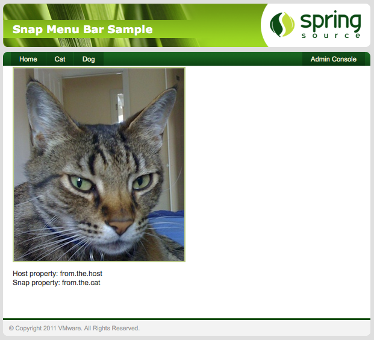

If you now deploy both the Dog and Cat snaps, two new items will appear on the menu bar, each providing content from their respective snaps.

If you look at the Cat page you will see it is also displaying some properties. The Cat Snap is a little more
complex, it has it's own DispatcherServlet defined in its web.xml and a
controller defined using annotations. If you look at the controller code you will see where these two properties
come from.
@Controller
public class CatController {
@RequestMapping("/meow")
public ModelAndView cat(HttpServletRequest request) throws IOException {
URL host = request.getServletContext().getResource("host:/WEB-INF/sample.properties");
Properties host_props = new Properties();
if(host != null){
host_props.load(host.openStream());
}
URL snap = request.getServletContext().getResource("/WEB-INF/sample.properties");
Properties snap_props = new Properties();
if(snap != null){
snap_props.load(snap.openStream());
}
return new ModelAndView("index").addObject("host", host_props.getProperty("some.property"))
.addObject("snap", snap_props.getProperty("some.property"));
}
}
There are two properties files called sample.properties located at the same path within both
the Cat snap and the host. Each contains a property called some.property but with distinct
value. Looking at the code above you can see the host: prefix being used to ensure the first lookup
only looks in the host and skips the snap. These values are then placed in the Model for the JSP page to render.